Capítulo 2. Anatomía de un prompt y primer programa DSPy
El capítulo anterior defendió, con teoría, por qué el prompt debe compilarse en vez de escribirse. Este desciende al detalle material de ese objeto. Antes de delegar su construcción a un optimizador conviene saber de qué está hecho un prompt —de tokens, no de palabras—, cómo se transforma la distribución del modelo en texto, y qué piezas ensambla DSPy a partir de una firma. Solo quien reconoce esa anatomía sabe leer la salida del compilador y diagnosticar un fallo con criterio.
El recorrido va de lo micro a lo macro: del token a la firma. Primero, la tokenización y la decodificación, que gobiernan coste y variabilidad; después, la abstracción de modelo que independiza el código del proveedor; luego, las firmas tipadas y los módulos, que son las unidades sobre las que operarán la evaluación y los optimizadores; y, al cerrar, el primer programa de extremo a extremo, con su prompt diseccionado pieza a pieza. El tono mantiene el del libro: se asume soltura con Python y con el manejo de modelos; no se explican preliminares.
Del texto a los tokens y la ventana de contexto
Un modelo de lenguaje no ve caracteres ni palabras: ve tokens, las unidades de su vocabulario. La tokenización por subpalabras, hoy estándar, fragmenta el texto en piezas de tamaño variable mediante un algoritmo que aprende, sobre un corpus, las secuencias de caracteres más frecuentes —la idea original del byte pair encoding para traducción (Sennrich et al. 2016)—. Una palabra común ocupa un token; una rara se parte en varios; un número o un fragmento de código pueden estallar en muchos. El vocabulario típico ronda las decenas o centenas de miles de entradas, y cada token se proyecta en un vector antes de entrar en la red. La figura 2.1 lo ilustra.
Esta granularidad no es un tecnicismo inocuo: condiciona tres aspectos prácticos del trabajo con prompts. El primero es el coste. La facturación de las API y el límite de la ventana de contexto se cuentan en tokens, no en palabras, de modo que estimar el gasto exige contar tokens, no caracteres. El segundo es el sesgo lingüístico: un texto en español suele requerir más tokens que su equivalente en inglés, porque los tokenizadores se entrenan con corpus dominados por el inglés; el mismo contenido cuesta más y consume más contexto en otras lenguas. El tercero son los artefactos de frontera: como el modelo razona sobre tokens, tareas en apariencia triviales —contar letras, operar dígito a dígito— se complican cuando la unidad no coincide con el símbolo relevante.
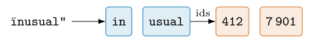
La consecuencia operativa es que toda contabilidad —de coste, de longitud, de truncamiento— se hace en tokens, y DSPy expone ese conteo en el historial del modelo (sección 2.3). Tener presente la unidad real evita sorpresas en la factura y en el límite de contexto.
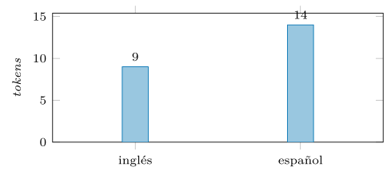
El algoritmo que aprende esas piezas es sencillo y revelador. Partiendo de los caracteres sueltos como vocabulario inicial, se cuenta en el corpus qué par de unidades adyacentes aparece con más frecuencia y se fusiona en una nueva unidad; el conteo se repite, fusión a fusión, hasta alcanzar el tamaño de vocabulario deseado (Sennrich et al. 2016). Las secuencias frecuentes —prefijos, sufijos, palabras comunes— acaban como tokens únicos; las raras quedan descompuestas en piezas. De ahí la asimetría práctica: «seguridad» puede ocupar un token, mientras que un identificador como «x7f_init» se fragmenta en varios. Las ventanas de contexto típicas de los modelos actuales van de unos miles a cientos de miles de tokens, y conocer el orden de magnitud del propio presupuesto evita diseñar un prompt que no quepa.
La ventana de contexto.
Los tokens no solo se pagan: también caben en un espacio finito. Cada modelo tiene una ventana de contexto —un número máximo de tokens que admite entre el prompt y la respuesta—, y todo cuanto entra compite por ese presupuesto: la instrucción, el contexto recuperado, las demostraciones y la propia salida. Programar prompts es, en parte, administrar esa ventana.
La gestión tiene tres frentes. El primero es el recorte: cuando el material excede la ventana, hay que decidir qué se descarta —los documentos menos relevantes, las demostraciones sobrantes— en vez de dejar que el proveedor trunque a ciegas por el final. El segundo es el empaquetado: como las demostraciones consumen contexto, su número óptimo no es «cuantas más mejor», sino el que equilibra señal y presupuesto, y de ahí que seleccionarlas con criterio (capítulo 5) importe también por coste. El tercero es la atención: el cómputo de un transformer crece con el cuadrado de la longitud, de modo que un contexto largo no solo cuesta más tokens, sino más tiempo por token.
La lección de diseño es que el contexto es un recurso escaso que se reparte, no un saco sin fondo. Un sistema que apila documentos sin medir su aporte paga doble —en factura y en latencia— y, peor, diluye la señal útil entre ruido. DSPy hace explícito ese reparto al construir el prompt, y los optimizadores lo respetan al elegir cuántas demostraciones inyectar. La figura 2.3 dibuja ese reparto.
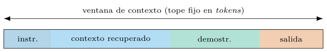
Tokens especiales y plantilla de chat.
No todos los tokens representan texto. El vocabulario reserva tokens especiales que estructuran la secuencia: marcas de inicio y fin, delimitadores que abren y cierran cada papel del diálogo, señales de fin de turno que detienen la generación. La plantilla de chat (chat template) es la receta que convierte la lista de mensajes con papeles —sistema, usuario, asistente— en esa secuencia exacta de tokens, y es específica de cada familia de modelos: la misma conversación se serializa distinto para cada una. El detalle denota diseño, no decoración. Un modelo ajustado por instrucciones aprendió a responder dentro de su plantilla; servirle el texto con otra —o con ninguna— degrada la obediencia sin mensaje de error alguno, el fallo silencioso más desconcertante del trabajo con modelos locales. Con proveedores por API la plantilla la aplica el servidor; con un modelo local, el servidor de inferencia la toma de la configuración del modelo, y usar un modelo base —sin ajuste por instrucciones— con plantilla de chat produce exactamente esa degradación. DSPy queda por encima de este estrato —habla en mensajes con papeles, no en tokens—, pero cuando un modelo local «no obedece», la plantilla es el primer sospechoso que revisar. La forma general se ve mejor en código que en prosa:
mensajes = [
{"role": "system", "content": "Clasifica el mensaje."},
{"role": "user", "content": "conexion SSH fallida"},
]
# la plantilla del modelo serializa los papeles a tokens especiales:
# <|inicio|>system<|sep|>Clasifica el mensaje.<|fin|>
# <|inicio|>user<|sep|>conexion SSH fallida<|fin|>
# <|inicio|>assistant<|sep|> <- aqui empieza a generarLos nombres exactos de las marcas varían por familia; la estructura —papeles delimitados por tokens reservados y un arranque de asistente que invita a generar— es común, y verla desarma su misterio.
Bytes, tildes y caracteres invisibles.
Bajo las subpalabras hay otra capa: los tokenizadores modernos operan sobre bytes, no sobre caracteres, con lo cual ningún texto queda fuera del vocabulario —todo byte tiene representación— pero los alfabetos alejados del inglés pagan peaje doble. Una tilde es un carácter para el lector y dos bytes para el tokenizador; un emoji, hasta cuatro; el efecto se suma al sesgo de corpus de la figura 2.2. Y hay bytes que el lector no ve: caracteres de anchura cero, marcas de dirección, homóglifos de otros alfabetos. Para el modelo son tokens como cualesquiera otros, y esa asimetría —invisible para la persona, presente para la máquina— es materia prima de ataques: instrucciones escondidas en texto en apariencia limpio, ya en el terreno de la inyección que el capítulo 7 trata en serio. La higiene mínima en la frontera del sistema: normalizar la codificación, retirar los caracteres de control que la tarea no exige y tratar el texto de origen externo como entrada no confiable también en este estrato.
Contar y presupuestar.
La contabilidad seria se hace con el tokenizador del modelo, no con reglas de tres sobre caracteres: la heurística de «cuatro caracteres por token» se desvía justo donde más duele —código, identificadores, otros idiomas—. Las fuentes fiables son dos: el tokenizador oficial del proveedor, para estimar antes de llamar, y el conteo real que cada respuesta trae consigo y que DSPy conserva en el historial (sección 2.3), para auditar después. Con esa medida, la ventana se administra como cualquier presupuesto: una partida por componente —instrucción, demostraciones, contexto recuperado— y una reserva explícita para la salida, porque el tope de generación compite por la misma ventana y un prompt que la agota trunca su propia respuesta. La política de recorte se escribe, no se improvisa: qué componente cede primero cuando no cabe todo —normalmente el contexto menos relevante, nunca la instrucción— y con qué criterio se poda, decisión que el capítulo 7 refina para el material recuperado.
Truncar no es neutral: el centro perdido.
Aun cuando todo cabe, no todo lugar de la ventana vale igual. Está medido que los modelos usan mejor la información situada al principio y al final del contexto y peor la del centro: ante la misma pregunta con la evidencia colocada en posiciones distintas, el acierto dibuja una curva en U, y la degradación crece con la longitud (Liu et al. 2024). Dos consecuencias de diseño. Al podar, el criterio no es solo cuánto entra, sino dónde queda lo importante: el material decisivo se acerca a los extremos —la instrucción ya vive al principio; la consulta, al final— y el relleno dudoso, si entra, ocupa el centro que menos se lee. Y al evaluar un sistema con contexto largo, la posición de la evidencia se convierte en una variable del experimento: un RAG que rinde con la evidencia arriba puede desplomarse cuando el reordenador la deja quinta de diez, un efecto que el capítulo 7 explota al ordenar los pasajes recuperados.
Anatomía de un prompt y su decodificación
Sobre esa base de tokens se construye el prompt. Aunque se genere de forma automática, contiene partes discernibles, y distinguirlas permite leer la salida del compilador y diagnosticar un fallo con criterio en vez de a tientas.
Instrucción: la tarea, en imperativo y sin ambigüedad.
Contexto: el material sobre el que se opera —un documento, una traza, los resultados de una recuperación—.
Formato de salida: la estructura exigida a la respuesta —campos, tipos, longitud—, que después se valida.
Demostraciones: ejemplos resueltos que fijan el patrón; suelen pesar más que la instrucción (capítulo 5).
Consulta: la entrada concreta que se quiere resolver.
Estas piezas no flotan en una cadena plana: los modelos actuales esperan un formato de chat con papeles —sistema, usuario, asistente—. Que un modelo obedezca una instrucción puesta en el papel de sistema no es gratuito: es fruto del ajuste por instrucciones con retroalimentación humana, que enseña al modelo a seguir órdenes en lugar de limitarse a continuar texto (Ouyang et al. 2022). La taxonomía de los componentes anteriores es hoy estándar en la literatura de prompting (Liu et al. 2023).
DSPy no pide redactar esa cadena ni colocar los papeles a mano: pide declarar la relación entrada–salida en una firma, y un adaptador la traduce a las partes anteriores y al formato de chat del proveedor (figura 2.4). El texto final deja de escribirse, pero conserva esta anatomía; por eso conviene conocerla antes de automatizarla.
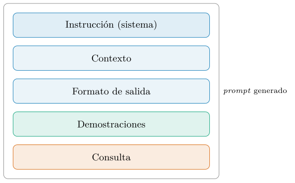
El papel de sistema y la jerarquía de obediencia.
Los papeles no son etiquetas decorativas: codifican una jerarquía. El ajuste por instrucciones enseña al modelo a tratar el mensaje de sistema como marco que gobierna la conversación y el de usuario como contenido a procesar (Ouyang et al. 2022), y de esa asimetría penden dos decisiones de diseño. La primera: el contrato —la instrucción, el formato, los criterios— viaja en el papel de sistema, donde su autoridad es mayor y donde el adaptador de DSPy lo coloca; mezclarlo con la entrada del usuario diluye la jerarquía que lo protege. La segunda: la jerarquía es una tendencia aprendida, no un mecanismo duro; un texto de usuario que ordena «ignora tus instrucciones» no debería obedecerse, y a menudo no se obedece, pero la garantía es estadística. Sobre esa grieta se construye la inyección de prompts, y sobre su defensa, las salvaguardas del capítulo 7; aquí basta fijar el principio: cuanto gobierna va en sistema; cuanto se procesa, en usuario; y confundir ambos planos es regalar autoridad a la entrada.
Estrategias de decodificación.
Una vez condicionada la distribución de la ecuación (1.1), queda convertirla en texto, y la forma de hacerlo cambia el resultado tanto como el propio prompt. La opción más simple es voraz: elegir en cada paso el token de mayor probabilidad. Resulta determinista, pero también empobrece: maximizar la verosimilitud paso a paso produce texto soso y extrañamente repetitivo, un fenómeno bien documentado (Holtzman et al. 2020).
Las alternativas introducen azar controlado. La temperatura \(\tau\) de la ecuación (1.3) aplana o agudiza la distribución antes de muestrear. El muestreo top-\(k\) restringe la elección a los \(k\) tokens más probables. El muestreo por núcleo (top-\(p\)) lo hace de forma adaptativa: toma el menor conjunto cuya masa acumulada alcanza un umbral \(p\), \[\begin{equation} V^{(p)} = \mathop{\mathrm{arg\,mín}}_{V'\subseteq V} \lvert V'\rvert \quad\text{sujeto a}\quad \sum_{v\in V'} \mathbb{P}_{\theta}(v\mid x_{<i}) \ge p, \end{equation}\] y muestrea solo dentro de \(V^{(p)}\), que se ensancha cuando el modelo duda y se estrecha cuando está seguro (Holtzman et al. 2020). La búsqueda por haz, útil en traducción, rara vez conviene en generación abierta, porque persigue alta verosimilitud y reincide justo en la degeneración descrita.
Para el resto del libro basta una regla operativa. Cuando se busca una salida estable y reproducible —el caso de producción y el de medir una cifra determinista— se usa temperatura cero o decodificación voraz. Cuando se busca medir la variabilidad de un sistema, se eleva la temperatura y se ajusta \(p\), asumiendo el azar como objeto de estudio. Las secuencias de parada y el tope de tokens cierran la generación y acotan el gasto. La tabla 2.1 resume las estrategias.
| Estrategia | Qué hace | Cuándo |
|---|---|---|
| Voraz | el token más probable | salida determinista |
| Temperatura \(\tau\) | aplana o agudiza | controlar el azar |
| Top-\(k\) | los \(k\) más probables | corte fijo |
| Núcleo (top-\(p\)) | masa acumulada \(\ge p\) | corte adaptativo |
| Haz | alta verosimilitud | traducción, no generación |
Conviene un ejemplo para fijar la diferencia entre los dos muestreos truncados. Supóngase que, en cierto paso, diez tokens acaparan el \(0{,}9\) de la masa y la cola larga reparte el \(0{,}1\) restante. Con top-\(k\) y \(k=40\) se admiten cuarenta candidatos, muchos de ellos de la cola improbable; con top-\(p\) y \(p=0{,}9\) se admiten solo esos diez, y ni uno de la cola. La diferencia es adaptativa: si en el paso siguiente el modelo duda y la masa se reparte entre cien tokens, el núcleo se ensancha para incluirlos, mientras que \(k\) permanece fijo y arbitrario. Por eso el muestreo por núcleo se ha impuesto como ajuste por defecto razonable: respeta la confianza variable del modelo paso a paso (Holtzman et al. 2020). La combinación habitual —temperatura moderada y un \(p\) alto— equilibra variedad y coherencia sin caer en la degeneración del extremo voraz. La figura 2.5 ilustra el corte adaptativo.
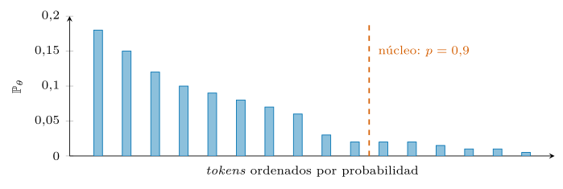
Logprobs: leer la confianza del modelo.
La distribución que la decodificación consume también se puede leer. Muchas interfaces devuelven, junto a cada token generado, su logaritmo de probabilidad —los logprobs— y los de sus alternativas más próximas, y esa señal tiene usos que el resto del libro explota. Sirve de medida de confianza barata: una etiqueta emitida con probabilidad abrumadora y una emitida por poco no merecen el mismo trato, y un umbral sobre el logprob habilita la abstención selectiva —derivar a revisión humana los casos dudosos— sin coste añadido. Sirve para detectar empates: dos etiquetas casi equiprobables delatan un caso frontera o una taxonomía mal cortada. La cautela obligada es la calibración: en el aprendizaje en contexto, la probabilidad del modelo viene sesgada por la plantilla, el orden de las demostraciones y la frecuencia de cada etiqueta —sesgos medidos y corregibles (Zhao et al. 2021)—, de modo que el umbral se fija empíricamente contra datos propios (capítulo 4), no se toma la probabilidad al pie de la letra. Los proveedores por API exponen esta señal de forma desigual; un modelo local la ofrece completa, una razón más del apartado siguiente.
Penalizaciones de repetición.
Junto a temperatura y núcleo, las interfaces ofrecen penalizaciones que rebajan la probabilidad de los tokens ya emitidos —por frecuencia de aparición o por mera presencia—, un remedio directo contra la degeneración repetitiva (Holtzman et al. 2020). Su uso pide pulso. En generación abierta y larga, una penalización suave evita el bucle de la frase que se repite. En salida estructurada es contraproducente: un JSON repite llaves, comillas y nombres de campo por construcción, y penalizar la repetición empuja al modelo a malformar justo la estructura que el adaptador va a validar; con código y con listas ocurre igual. La regla operativa del libro: penalizaciones a cero en extracción, clasificación y toda salida tipada; temperatura y núcleo como primeros mandos en lo abierto; y las penalizaciones solo cuando la repetición aparezca medida, no por superstición preventiva.
Longitud: tope, parada y salidas que se cortan.
La generación termina por tres vías, y distinguirlas evita un modo de fallo sibilino. Termina bien cuando el modelo emite su señal de fin o una secuencia de parada definida por el programador —el cierre natural del formato—. Termina mal cuando agota el tope de salida (max_tokens): la respuesta se corta a media frase o, peor, a medio JSON, y un objeto truncado no es un error del modelo sino del presupuesto, aunque el validador lo señale como sintaxis. Las interfaces declaran el motivo de terminación junto a la respuesta, y leerlo cambia el diagnóstico: ante un corte por longitud, reintentar con la misma configuración es repetir el choque; lo debido es ampliar la reserva de salida o estrechar cuanto se pide. Las secuencias de parada, por su lado, son un mando de precisión barato: cortar en el delimitador del siguiente campo ahorra tokens de salida —los caros— y le quita al modelo la ocasión de divagar tras completar su tarea.
El mito del determinismo.
Temperatura cero promete la misma salida ante el mismo prompt, y la práctica desmiente la promesa con frecuencia suficiente para merecer aviso. Sobre una API, la respuesta puede variar entre llamadas idénticas: el proveedor agrupa peticiones en lotes cuya composición cambia, la aritmética en coma flotante no es asociativa y el orden de suma altera resultados en el límite del empate, algunas arquitecturas enrutan cada petición por expertos distintos según la carga, y el modelo mismo se actualiza sin aviso. Algunos proveedores aceptan una semilla que vuelve la salida «mayormente» reproducible, sin garantía. En local se controla más —misma máquina, mismos núcleos, ejecución determinista forzada—, pero el lote y la versión del motor de inferencia siguen influyendo. Las consecuencias metodológicas ya las impone el libro: las cifras se dan como media con desviación sobre varias corridas (capítulo 4), la caché convierte en repetible el registro de una corrida —no al modelo—, y «me lo dio ayer» no es un argumento: es una anécdota con fecha.
La abstracción LM: instalación, caché y coste
DSPy no se ata a un proveedor. La clase dspy.LM delega en LiteLLM (BerriAI 2024), que ofrece una interfaz única sobre decenas de proveedores; el resto del programa ignora cuál hay detrás (figura 2.6). Cambiar de modelo es cambiar una cadena, no reescribir el sistema —la portabilidad que motivaba el capítulo anterior—.
import dspy
# un modelo por API; el resto del programa no cambia al cambiar de proveedor
lm = dspy.LM("openai/gpt-4o-mini", temperature=0.0)
# alternativas: "anthropic/claude-haiku-4-5", "mistral/mistral-small-latest"
dspy.configure(lm=lm)Para trabajar sin coste y sin enviar datos fuera, un modelo local se declara igual, cambiando el identificador y la dirección del servicio; aquí, servido por vLLM, la vía local del libro:
lm = dspy.LM("hosted_vllm/Qwen/Qwen2.5-7B-Instruct",
api_base="http://localhost:8000/v1", api_key="")
dspy.configure(lm=lm)La elección entre API y local es un compromiso explícito. La API da acceso a modelos grandes sin infraestructura, a cambio de coste por token, latencia de red y el envío de datos a un tercero. El modelo local elimina el coste variable y mantiene los datos en casa, a costa de hardware y, con modelos pequeños, de calidad. Programar contra la abstracción LM permite empezar con un modelo y migrar a otro sin tocar la lógica. La tabla 2.2 resume el compromiso.
| Por API | Local | |
|---|---|---|
| Coste | por token | hardware fijo |
| Datos | salen a un tercero | no salen de casa |
| Modelos | grandes, sin infra | según el hardware |
| Latencia | de red | local |
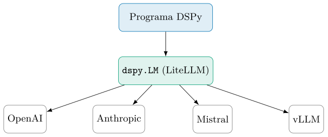
dspy.LM; el proveedor concreto se elige con una cadena, y la lógica permanece intacta al cambiarlo.Servir en local, en serio: vLLM.
La elección de vLLM como servidor local no es un capricho. Cuando el trabajo local pasa de probar a medir —evaluaciones de cientos de ejemplos, optimizaciones con miles de llamadas—, el cuello es el rendimiento del servidor de inferencia. El planificador de vLLM agrupa peticiones de forma continua —cada hueco que deja una secuencia terminada lo ocupa otra en curso— y gestiona la memoria de atención por bloques (Kwon et al. 2023), y así sostiene decenas de peticiones concurrentes en una sola GPU sin desplomarse; justo el perfil de carga de una evaluación paralela (sección 2.3). Como expone una interfaz compatible con la de OpenAI, el identificador hosted_vllm/... del listado anterior es todo el cambio en DSPy.
La división del trabajo queda así: vLLM para explorar y para el banco de medidas en local, y también para servir con rendimiento (capítulo 10); la API externa para la calidad que el hardware propio no alcance. El montaje concreto del entorno —versiones, GPU, arranque del servidor— vive en el apéndice A, y la elección entre ambas vías vuelve, con criterio de privacidad, en el capítulo 9.
Un modelo por módulo.
La abstracción rinde su interés compuesto cuando el programa crece: no hay razón para que todos los módulos usen el mismo modelo. Un bloque dspy.context fija un LM distinto para una región del código, y con él un programa reparte el trabajo por coste y capacidad: el módulo que normaliza o filtra corre en un modelo pequeño —local incluso—, y el que razona sobre el caso difícil paga el modelo grande. El patrón reaparece con papeles protagonistas más adelante —teacher y student en la optimización (capítulo 5), un modelo por etapa en los flujos (capítulo 7), la frontera de confianza local/externo en privacidad (capítulo 9)—; conviene retener desde ya su forma económica: el coste de un programa no lo fija «el modelo elegido», sino la suma de módulos por llamadas por tarifa, y esa suma tiene tantos sumandos ajustables como módulos.
Instalación, claves y entorno.
La instalación se reduce a un paquete y a un cargador de variables de entorno:
pip install dspy python-dotenvLas claves de API no se escriben en el código ni se versionan. Se guardan en un fichero .env —excluido del control de versiones— y se cargan en tiempo de ejecución:
# .env (no se versiona; ver .gitignore)
OPENAI_API_KEY=sk-...from dotenv import load_dotenv
load_dotenv() # expone las claves del .env como variables de entornoDos cautelas acompañan a la instalación. La primera, de coste: cada llamada a una API tiene un precio, así que conviene fijar un presupuesto por experimento y vigilar el conteo de tokens (sección 2.3). La segunda, de reproducibilidad: los modelos por API cambian sin aviso, de modo que conviene anotar el modelo y su versión exacta junto a toda cifra que se publique, una disciplina que el capítulo 4 formaliza.
Caché, parámetros y coste.
Tres mandos gobiernan coste y reproducibilidad. La caché, activa por omisión, guarda la respuesta de cada llamada idéntica indexada por el contenido de la petición: ahorra dinero y hace repetible una ejecución. Los parámetros de muestreo —temperatura, tope de tokens, \(p\) del núcleo, secuencias de parada— fijan el régimen de decodificación de la sección 2.2. Y el historial registra cada llamada con su conteo de tokens, base de toda contabilidad de gasto.
lm = dspy.LM("openai/gpt-4o-mini",
temperature=0.0, max_tokens=1000, cache=True)
dspy.configure(lm=lm)
# tras unas llamadas, el historial expone tokens y coste por petición
dspy.inspect_history(n=1)La elección depende del objetivo, y reproduce la tensión del capítulo 1. Para una salida estable en producción, caché activa y temperatura cero. Para medir la variabilidad de un modelo —cuánto cambia su respuesta entre llamadas—, hay que desactivar la caché y elevar la temperatura, porque una caché devolvería siempre el mismo valor y ocultaría el fenómeno que se quiere medir. El conteo de tokens del historial permite, además, estimar el coste antes de lanzar una optimización: basta multiplicar las llamadas previstas por el gasto medio por llamada.
La caché y los parámetros tienen, además, una dimensión de escala que importa al optimizar. Una optimización ejecuta el programa miles de veces, y dos decisiones deciden si eso es viable. La primera es la caché: durante una búsqueda, muchas llamadas se repiten —la misma demostración evaluada en configuraciones distintas—, y la caché por contenido las sirve sin pagar de nuevo, y eso recorta el gasto en un factor grande. La segunda es la ejecución en paralelo: como cada ejemplo del conjunto es independiente, evaluar un programa sobre cientos de ejemplos admite lanzar muchas llamadas a la vez, y DSPy paraleliza la evaluación para que la latencia de red no domine el reloj. El compromiso es con los límites de tasa del proveedor: demasiada concurrencia provoca rechazos que hay que reintentar. Medir el coste por configuración y fijar un grado de paralelismo prudente es, por tanto, parte del diseño de cualquier optimización seria.
La caché de DSPy por dentro.
Saber qué indexa la caché evita dos sorpresas simétricas. La clave se calcula sobre la petición completa: el modelo, sus parámetros de muestreo y el prompt entero. De ahí la primera sorpresa: cambiar la temperatura, el tope de salida o una demostración invalida la entrada —la caché no «casi acierta»—, y una optimización que varía configuraciones repuebla la caché en vez de reutilizarla tanto como se esperaba. Y de ahí la segunda: con temperatura alta, la caché devuelve siempre la misma muestra de una distribución que debería variar; medir variabilidad con caché activa mide la caché, no el modelo (capítulo 4). La caché persiste en disco entre procesos —una corrida interrumpida se reanuda sin repagar lo ya llamado— y conviene tratarla como un artefacto más: saber dónde vive, cuánto ocupa y cuándo vaciarla, porque una caché envenenada por una versión anterior del programa produce resultados «imposibles» que ningún depurador del modelo explicará. Esta caché de cliente es, además, capa distinta de la caché de prefijo del proveedor: aquella ahorra la llamada entera; esta abarata la llamada que sí ocurre.
Un cálculo rápido fija el orden de magnitud del gasto. Si una llamada típica consume mil tokens de entrada y doscientos de salida, y el precio ronda fracciones de céntimo por millar de tokens, una sola llamada cuesta décimas de céntimo; una evaluación sobre trescientos ejemplos, unas decenas de céntimos; y una optimización que repita esa evaluación cientos de veces, del orden de decenas de euros. La caché recorta esa cifra siempre que haya repetición, y por eso conviene activarla salvo cuando se mide variabilidad. El hábito de estimar el coste antes de lanzar una corrida —multiplicar llamadas previstas por gasto medio— distingue una práctica sostenible de una factura sorpresa. La tabla 2.3 fija los órdenes de magnitud.
| Unidad de gasto | Orden de magnitud |
|---|---|
| Una llamada (mil + doscientos tokens) | décimas de céntimo |
| Evaluación (300 ejemplos) | decenas de céntimos |
| Optimización (cientos de evaluaciones) | decenas de euros |
Entrada y salida no cuestan lo mismo.
El cálculo anterior esconde una asimetría que conviene explotar: en las tarifas por API, el token de salida cuesta varias veces más que el de entrada, porque generar exige un paso de red por token mientras que leer el prompt se procesa de una pasada. La estructura de un programa DSPy decide en qué lado de esa asimetría gasta. Las demostraciones engordan la entrada: son el mecanismo de mejora barato por token. El razonamiento intermedio engorda la salida: paga la tarifa cara en cada llamada (sección 2.6). Y a la entrada la abarata otro mecanismo: la caché de prefijo, con la que el proveedor —o vLLM en local— reutiliza el cómputo de un comienzo de prompt ya visto y cobra con descuento los tokens que lo repiten. Un programa compilado es el cliente ideal de esa caché: instrucción y demostraciones forman un prefijo estable e idéntico en todas las llamadas, y solo la consulta varía al final —exactamente el orden en que el adaptador ensambla las piezas (figura 2.4)—. La regla de diseño: lo fijo delante, lo variable detrás, y el grueso de la mejora en demostraciones cuando el coste manda; el razonamiento, donde esté medido que hace falta.
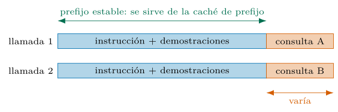
Firmas como contratos tipados
La firma es la pieza sobre la que gira el resto del libro. En su forma breve, se escribe como una cadena que nombra los campos de entrada y de salida:
responder = dspy.Predict("pregunta -> respuesta")
print(responder(pregunta="¿qué expresa una firma en DSPy?").respuesta)En su forma plena, se declara como una clase con campos tipados y descripciones, y un espacio de etiquetas cerrado se fija con un tipo Literal:
from typing import Literal
class Clasificar(dspy.Signature):
"""clasifica un mensaje de log de seguridad por su intencion."""
texto: str = dspy.InputField(desc="linea de log o mensaje crudo")
etiqueta: Literal["benigno", "sospechoso", "critico"] = dspy.OutputField()La firma es un contrato: declara el qué —los campos, sus tipos, su semántica— y delega el cómo en un adaptador. El adaptador hace tres cosas: ensambla el prompt con la anatomía de la sección 2.2, impone el formato de salida y, al recibir la respuesta, la analiza de vuelta a los campos tipados; si el modelo entrega algo que no encaja —una etiqueta fuera del Literal, un JSON mal formado—, el adaptador puede reintentar con una instrucción correctora. El tipado no es cosmético: vuelve el sistema robusto y componible, porque la salida de un módulo es una estructura predecible, no una cadena que haya que desbrozar a mano. Es la realización práctica de la firma definida en el capítulo 1. La figura 2.8 separa los dos planos.
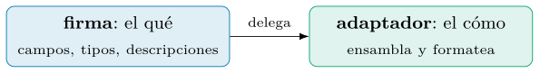
El tipado admite más matiz del que sugiere el ejemplo. Los campos pueden ser listas, valores numéricos o estructuras anidadas, y cada tipo guía al adaptador sobre cómo pedir y validar la salida; un campo list[str] reclama una lista, no una cadena con comas que luego habría que dividir a mano. Las descripciones por campo, además, no son comentarios ociosos: viajan al prompt como parte de la instrucción y orientan al modelo sobre el significado de cada salida. Y la firma admite varios campos de entrada y de salida a la vez —clasificar y, en la misma llamada, justificar—, de modo que un solo módulo puede declarar un contrato rico. Cuanto más preciso el tipo, menos trabajo de análisis y menos margen de error: la firma bien tipada es la primera línea de defensa contra una salida malformada. La tabla 2.4 recorre los tipos y su exigencia.
| Tipo del campo | Qué reclama al adaptador |
|---|---|
str |
texto libre |
Literal[...] |
una etiqueta del conjunto cerrado |
list[str] |
una lista, no una cadena con comas |
BaseModel |
un objeto validado contra su esquema |
Escribir la firma que el optimizador merece.
Aunque el optimizador reescriba instrucciones, la firma de partida no da igual, porque fija el espacio en que aquel trabaja. Tres hábitos rinden más de cuanto cuestan. Primero, nombres con semántica: los identificadores de campo viajan al prompt, y etiqueta_riesgo orienta al modelo donde salida2 despista; el nombre es instrucción gratuita. Segundo, descripciones declarativas: el desc dice qué es el campo y qué criterios lo gobiernan —«gravedad según el impacto en el servicio, no según el volumen de alertas»—, no ejemplos concretos, que son trabajo de las demostraciones y llegarán por el optimizador (capítulo 5); duplicarlos a mano en la descripción los fosiliza fuera del alcance de la búsqueda. Tercero, el docstring de la clase es la instrucción semilla: MIPROv2 parte de él para proponer variantes, así que merece una frase precisa en vez de una ocurrencia. La firma bien escrita no compite con el optimizador: le entrega un espacio de búsqueda limpio.
Versionar el contrato.
La firma evoluciona —se añade un campo, se parte una etiqueta en dos, se endurece un tipo—, y cada cambio tiene efectos materiales que conviene tratar como una migración de esquema, no como un retoque. Cambia el prompt ensamblado, así que invalida la caché por contenido (sección 2.3). Deja obsoleto el artefacto compilado: las demostraciones guardadas hablan el formato viejo, y cargarlas sobre la firma nueva mezcla dos contratos en un mismo prompt; tras un cambio de firma se recompila y se reevalúa, no se «aprovecha». Y rompe la comparabilidad de las cifras: una exactitud medida con tres etiquetas no se compara con una de cuatro, de modo que el registro de experimentos (sección 2.9) anota la versión de la firma junto al resto de la ficha. El contrato es la unidad de estabilidad del sistema; versionarlo con seriedad es la diferencia entre evolucionar y derivar.
Abstención y campos opcionales.
Un contrato honesto contempla el caso en que la respuesta correcta es «no lo sé». La firma lo expresa con tipos: una opción explícita en el Literal —"desconocido", con su semántica descrita— o un campo opcional que admite valor nulo cuando la entidad pedida no existe en el texto. La alternativa —forzar siempre una de las etiquetas «buenas»— fabrica alucinaciones por diseño: el modelo rellenará el hueco con la opción menos mala y el error viajará aguas abajo con aspecto de dato. El patrón se completa con la señal de confianza de la sección 2.2 —abstenerse también cuando la etiqueta salga con probabilidad raquítica— y con la validación semántica que el tipo no captura: que una puntuación caiga en su rango, que una fecha exista, que un CVE tenga el formato debido; esas comprobaciones viven en validadores del modelo de datos y convierten al adaptador en un contrato de verdad. El clasificador del capítulo 3 hace de la abstención una pieza central del triaje; aquí queda declarada su base tipada.
El orden de los campos también programa.
Una firma con varios campos de salida encierra una decisión que pasa por sutil y es mecánica: el modelo genera los campos en el orden declarado, y cada campo condiciona a los siguientes por la autorregresión del capítulo 1. ChainOfThought funciona exactamente por esto: el razonamiento se declara antes de la respuesta, de modo que la respuesta se genera condicionada al razonamiento ya escrito; invertir el orden produce una racionalización a posteriori de una respuesta ya emitida, con aspecto idéntico y valor distinto. La regla general: los campos que fundamentan preceden a los campos que concluyen —la evidencia antes que el veredicto, la justificación antes que la nota—. En la entrada rige otra lógica, la de la caché de prefijo (figura 2.7): los campos estables entre llamadas se declaran primero y los variables al final, para maximizar el prefijo compartido. El orden denota contrato, no estética.
Adaptadores: del campo tipado al texto y de vuelta
Entre la firma y el modelo media una pieza que conviene mirar de cerca: el adaptador. Es quien traduce la declaración tipada en un prompt concreto y, a la vuelta, convierte la respuesta cruda del modelo en los campos de salida. Sin él, la firma sería una promesa sin cumplir.
DSPy ofrece más de una estrategia de adaptación. El adaptador de chat por omisión presenta cada campo con un prefijo legible —Texto:, Etiqueta:— y reparte el contenido entre los papeles del formato de chat; al recibir la respuesta, localiza esos prefijos y extrae cada campo. El adaptador de JSON, en cambio, pide al modelo una estructura JSON que encaje con los tipos de la firma y la analiza con un validador; resulta más robusto cuando la salida es compleja o anidada, a costa de un formato menos natural para el modelo (DSPy 2024). La tabla 2.5 contrasta ambas estrategias.
| Chat (por omisión) | JSON | |
|---|---|---|
| Formato | prefijos legibles | estructura JSON |
| Análisis | localiza prefijos | valida el esquema |
| Mejor para | salida simple | salida compleja o anidada |
La robustez nace del ciclo de validación. Si la respuesta no encaja —una etiqueta fuera del Literal, un JSON mal cerrado, un campo ausente—, el adaptador no se rinde: reintenta con una instrucción correctora que describe el formato esperado, y solo eleva el error si la reparación falla. Ese lazo convierte una salida probabilística en una estructura tipada fiable, y es la razón por la que la salida de un módulo puede alimentar a otro sin desbrozado manual. La elección de adaptador es, en la práctica, una palanca de fiabilidad que se ajusta sin tocar la lógica del programa. La figura 2.9 dibuja el ciclo completo.
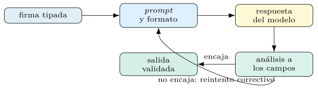
Literal, JSON mal cerrado—, reintenta con una instrucción correctora. Ese lazo convierte una salida probabilística en una estructura tipada fiable.Cuando el modelo habla de más.
El fallo de análisis más frecuente no es el JSON roto: es el JSON perfecto envuelto en cortesía. Los modelos de chat tienden a preludiar («Claro, aquí tienes el resultado:») y a envolver la estructura en vallas de markdown, y un analizador ingenuo tropieza con el envoltorio antes de llegar al contenido. Los adaptadores curten esa fricción —localizan la estructura dentro del ruido, retiran vallas, toleran espacio alrededor—, y conviene saber que lo hacen, porque explica una asimetría práctica: pelear contra la charla en el prompt («no añadas explicaciones») funciona a medias y consume instrucción, mientras que absorberla en el análisis funciona siempre y no cuesta tokens. La secuencia de parada de la sección 2.2 remata el caso contrario —el modelo que sigue hablando después del resultado—, y la decodificación restringida del siguiente apartado disuelve el problema de raíz cuando el motor la ofrece.
Decodificación restringida: imponer el formato al generar.
El ciclo validar-y-reintentar corrige después; hay una vía que impide el error durante. La decodificación restringida (constrained decoding) compila el formato exigido —una expresión regular, un esquema JSON, una gramática— en un autómata que acompaña a la generación: en cada paso se enmascaran los tokens que violarían el formato y el modelo solo elige entre los válidos; la salida queda sintácticamente correcta por construcción y sin coste apreciable por paso (Willard y Louf 2023). Los motores de servicio locales la integran —vLLM la ofrece sobre gramáticas y esquemas, con XGrammar como motor de referencia (Dong et al. 2025)—, y las API la asoman como «modo JSON» o salida conforme a esquema, con garantías variables. Dos matices templan el entusiasmo. La restricción garantiza sintaxis, no acierto: un JSON impecable puede contener la etiqueta equivocada, así que la validación semántica del adaptador sigue en pie. Y una gramática que pelea contra las preferencias del modelo puede degradar el contenido —el modelo quería explicar y se le fuerza a un campo—; la firma bien diseñada alinea formato y tarea para que la máscara actúe de barandilla, no de camisa de fuerza. En el reparto del libro: restricción dura donde el formato es crítico y el modelo es local; ciclo de reintento como red universal en todo lo demás. La tabla 2.6 ordena las tres vías.
| Mecanismo | Dónde corre | Garantiza | Riesgo |
|---|---|---|---|
| reintento del adaptador | en el cliente, universal | formato tras | latencia y coste del reintento |
| validar | |||
| modo JSON del proveedor | en la API | sintaxis JSON, esquema según | garantías desiguales |
| proveedor | |||
| gramática en el motor | servidor local (vLLM, XGrammar) | sintaxis por | gramática contra modelo |
| construcción |
Módulos: del Predict al razonamiento
Un módulo realiza una firma con una estrategia de inferencia. El más simple, Predict, pide la salida directamente. ChainOfThought añade un campo de razonamiento intermedio antes de la respuesta, una técnica que mejora las tareas que requieren varios pasos (Wei et al. 2022). Otros módulos —el uso de herramientas con ReAct, el cálculo con ProgramOfThought— se tratan en el capítulo 7; aquí basta retener que todos comparten la misma firma y se intercambian sin tocar el resto. La tabla 2.7 los resume.
| Módulo | Qué añade | Cuándo |
|---|---|---|
Predict |
salida directa | tarea simple |
ChainOfThought |
razonamiento intermedio | varios pasos |
ReAct |
uso de herramientas | flujos y agentes |
ProgramOfThought |
cálculo con código | aritmética exacta |
clasificar = dspy.ChainOfThought(Clasificar)
pred = clasificar(texto="conexion SSH fallida desde 10.0.0.5")
print(pred.razonamiento, pred.etiqueta, sep="\n")Los módulos se componen en programas. Un programa propio hereda de dspy.Module y encadena módulos en su método forward; el programa entero —no cada módulo por separado— es la unidad que después se optimiza, y la señal de la salida final se reparte hacia atrás por el bootstrapping de trazas del capítulo 1 (figura 2.10):
class Triaje(dspy.Module):
def __init__(self):
super().__init__()
self.clasificar = dspy.ChainOfThought(Clasificar)
self.resumir = dspy.Predict("texto, etiqueta -> resumen")
def forward(self, texto):
c = self.clasificar(texto=texto)
r = self.resumir(texto=texto, etiqueta=c.etiqueta)
return dspy.Prediction(etiqueta=c.etiqueta, resumen=r.resumen)Triaje encadena dos módulos: clasificar, con razonamiento, produce la etiqueta; resumir combina texto y etiqueta. El programa entero —no cada módulo por separado— es la unidad que se optimiza, y la señal se reparte hacia atrás.Un programa compilado no es efímero: se guarda y se carga. Tras optimizarlo, sus prompts ajustados —instrucciones y demostraciones— se serializan a disco y se recuperan sin repetir el gasto de la optimización, algo que importa cuando una corrida costó decenas de euros (sección 2.3). DSPy expone además los predictores internos de un módulo, de modo que se puede inspeccionar qué instrucción y qué demostraciones quedaron fijadas en cada paso —la transparencia que distingue un programa de una caja negra—. Guardar el estado compilado, y no solo el código, es parte de la reproducibilidad: el mismo programa, el mismo modelo y el mismo estado producen la misma conducta.
Cuánto cuesta el razonamiento.
ChainOfThought no es gratis, y conviene tratarlo como la decisión de coste que es. El campo de razonamiento multiplica los tokens de salida —los caros, por la asimetría de la sección 2.3— y alarga la latencia en proporción, porque cada token generado es un paso de red. El retorno existe donde la tarea encadena pasos —composición, aritmética con contexto, decisiones con condiciones— y ahí está medido que razonar mejora (Wei et al. 2022); en una clasificación directa con buenas demostraciones, el razonamiento puede aportar poco más que factura, y la única forma de saberlo es la del libro: medir ambas variantes con el método del capítulo 4 —mismos datos, misma métrica, coste anotado— y decidir con las dos curvas delante. Para el clasificador del capítulo 3, medido, el razonamiento sube la exactitud de % (Predict) a % (ChainOfThought) a cambio de pasar de a tokens por predicción: unos tres puntos por casi un tercio más de coste. Regla de diseño mientras tanto: Predict por defecto, ChainOfThought donde el error residual lo justifique, y nunca «por si acaso» en un módulo que se ejecuta un millón de veces al mes.
Muestrear varias veces: autoconsistencia.
Hay una tercera palanca entre «una llamada» y «mejor modelo»: varias llamadas. La autoconsistencia (self-consistency) muestrea varios razonamientos con temperatura y se queda con la respuesta mayoritaria, bajo la lógica de que muchos caminos correctos convergen en el mismo resultado y los erróneos se dispersan; la mejora sobre el razonamiento a una sola muestra está medida y es sustancial en tareas de varios pasos (Wang et al. 2023). DSPy la expresa sin ceremonia —se muestrea \(N\) veces el mismo módulo y se agrega por mayoría; para salidas no votables, una variante selecciona la mejor muestra según una función de recompensa—. El precio es lineal: \(N\) muestras, \(N\) facturas de salida, y por eso el orden de decisión del libro es demostraciones primero —pagan en entrada barata—, razonamiento después, y muestreo múltiple solo donde el punto extra de acierto justifique multiplicar el coste; la comparación pertenece, como siempre, al método del capítulo 4.
El primer programa y las salidas estructuradas
Con las piezas en su sitio, el primer programa se arma en tres pasos: configurar el LM, declarar la firma y el módulo, y predecir. Para ver qué prompt se envió de verdad —y reconocer en él la anatomía de la sección 2.2— se inspecciona el historial, que muestra además el conteo de tokens:
import dspy
from dotenv import load_dotenv
load_dotenv()
dspy.configure(lm=dspy.LM("openai/gpt-4o-mini", temperature=0.0))
clasificar = dspy.ChainOfThought(Clasificar)
pred = clasificar(texto="conexion SSH fallida desde 10.0.0.5")
print(pred.etiqueta)
dspy.inspect_history(n=1) # disecciona el prompt y reporta tokensLa salida de inspect_history es el mejor ejercicio de lectura del capítulo: en ella aparecen la instrucción derivada de la firma, las descripciones de campo que fijan el formato, las demostraciones —vacías todavía, porque el programa no se ha optimizado— y la consulta. El programa completo y ejecutable vive en codigo/cap02/primer_programa.py. A partir de aquí, la firma deja de ser una curiosidad: es la unidad sobre la que operarán la evaluación (capítulo 4) y los optimizadores (capítulo 5). La tabla 2.8 resume de dónde sale cada parte del prompt enviado.
| En el prompt enviado | De dónde sale |
|---|---|
| Instrucción | la firma |
| Descripciones de campo | los desc de la firma |
| Demostraciones (vacías) | el optimizador (aún no corrido) |
| Consulta | la entrada concreta |
Leer un prompt compilado.
El mismo ejercicio, repetido tras una optimización, es la auditoría más barata del libro, y conviene saber qué buscar. En el papel de sistema, la instrucción ya no será el docstring literal: será la variante que el optimizador promovió, y leerla dice qué criterios destiló —a veces reglas que nadie escribió y que los datos enseñaron—. Después vendrán las demostraciones, ya no vacías: cada una con sus campos de entrada y salida en el formato del adaptador y, si el módulo razona, con el razonamiento arrastrado desde la traza que la generó. Las señales de alarma también se leen: demostraciones casi idénticas entre sí —diversidad desperdiciada—, una demostración con la etiqueta equivocada —el filtro de la métrica dejó pasar ruido—, demostraciones con datos que no deberían viajar —la auditoría de privacidad del capítulo 9—, o un prefijo tan largo que estrangula el presupuesto de la sección 2.1. El artefacto compilado es texto: se revisa como se revisa un cambio de código, antes de promoverlo.
Salidas estructuradas.
Una etiqueta es la salida más simple; muchas tareas exigen estructuras: una lista de entidades, un objeto con campos, una puntuación con su justificación. La firma tipada las admite declarando campos de salida con tipos compuestos —listas, objetos anidados— que el adaptador traduce a un esquema y valida al recibir la respuesta. Cuando la estructura es rica, el adaptador de JSON (sección 2.5) pide al modelo un JSON conforme al esquema y lo analiza con un validador, reintentando si no encaja.
from pydantic import BaseModel
class Hallazgo(BaseModel):
cve: str
gravedad: Literal["baja", "media", "alta"]
class Extraer(dspy.Signature):
"""extrae los hallazgos de un informe de seguridad."""
informe: str = dspy.InputField()
hallazgos: list[Hallazgo] = dspy.OutputField()La validación tipada es la frontera entre un prototipo y un sistema: una salida que encaja en un tipo se compone con el resto del programa sin análisis frágil, y una que no encaja se detecta y se corrige en el acto, en vez de propagar un error silencioso. Cuanto más estricto el tipo, menos superficie de fallo. La tabla 2.9 condensa esa frontera.
| Salida como cadena | Salida como tipo |
|---|---|
| se desbroza a mano | se compone directamente |
| el fallo se propaga | el fallo se detecta en el acto |
| frágil | validada contra el esquema |
Probar el programa como software.
Un programa DSPy es código, y el código se prueba. La dificultad aparente —¿cómo se escribe una prueba unitaria contra un modelo estocástico y de pago?— se disuelve separando dos planos. La lógica del programa —la composición de módulos, el manejo de la salida tipada, los caminos de error— se prueba con un modelo de mentira: un doble que devuelve respuestas fijadas por la prueba, sin red y sin coste, suficiente para verificar que el forward compone bien y que el contrato de la firma se respeta. La conducta del modelo real se cubre con una prueba de humo pequeña —un puñado de ejemplos representativos contra el modelo de verdad, con caché— que corre en la integración continua y delata regresiones gruesas: el proveedor que cambió, el adaptador que dejó de analizar, la clave que caducó. La evaluación completa (capítulo 4) es otra cosa y otra factura; las pruebas responden a una pregunta más modesta y más frecuente: ¿sigue funcionando el programa? Esa pregunta debe responderse en segundos, no en euros.
Entradas multimodales, streaming y latencia
El prompt no se limita al texto. Los modelos multimodales aceptan imágenes —una captura de pantalla, un diagrama de red, una muestra de malware visualizada— junto al texto, y DSPy lo expone con un tipo de entrada de imagen en la firma, sin cambiar el resto del programa.
class Describir(dspy.Signature):
"""describe la actividad sospechosa en la captura."""
captura: dspy.Image = dspy.InputField()
descripcion: str = dspy.OutputField()
describir = dspy.Predict(Describir)
describir(captura=dspy.Image.from_file("alerta.png"))La multimodalidad amplía el alcance del método sin alterarlo: la firma sigue declarando el contrato, el adaptador sigue ensamblando el prompt y el optimizador sigue ajustándolo. Un campo de imagen es, para el sistema, una entrada más; cambia el codificador del modelo, no la disciplina de programarlo. La figura 2.11 lo esquematiza.
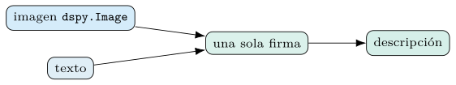
Lo que cuesta una imagen.
La imagen entra en la misma ventana que el texto: el proveedor la trocea en mosaicos y la factura como tokens, en número que crece con la resolución —una captura de pantalla grande puede costar tanto como varias páginas de texto—. De ahí tres hábitos. Redimensionar y recortar antes de enviar: si la señal está en una región —la ventana de la alerta, no el escritorio entero—, recortar es minimizar coste y ruido a la vez. Elegir la resolución según la tarea: leer texto en pantalla exige detalle; reconocer una disposición general, no. Y contar las imágenes en el presupuesto de la sección 2.1 como un componente más, en competencia con demostraciones y contexto. En local, los modelos de visión pesan más que sus homólogos de texto y el rendimiento cae en proporción; la decisión API-o-local de la sección 2.3 se repite aquí con los mismos términos y, cuando la captura contiene datos personales, con los del capítulo 9.
Streaming y latencia.
En producción, la latencia percibida importa tanto como la calidad, y dos mecanismos la mitigan. El streaming entrega la respuesta token a token a medida que se genera, de modo que el usuario ve avanzar el texto sin esperar al final; útil en interfaces conversacionales. La asincronía y el paralelismo solapan muchas llamadas independientes —una evaluación, un lote de clasificaciones— para que la latencia de red no se sume en serie.
DSPy soporta ambos sin cambiar la lógica del programa: el mismo módulo se invoca de forma síncrona, en streaming o en paralelo según el contexto de ejecución. La decisión es de despliegue, no de diseño, y se ajusta al perfil de uso: baja latencia por respuesta en una interfaz, alto rendimiento agregado en un proceso por lotes. La figura 2.12 compara los tres regímenes.
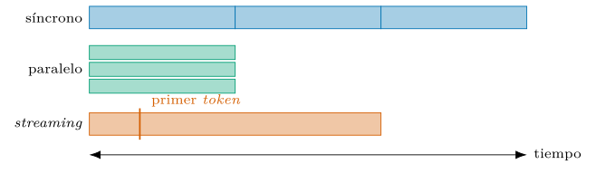
Observabilidad y el modelo de programación
Un sistema que no se observa no se depura. Más allá de inspect_history (sección 2.7), DSPy expone la traza de una ejecución: la secuencia de llamadas que cada módulo hizo, con sus entradas, salidas y tokens. Esa traza sirve a tres tareas: depurar un fallo —ver en qué módulo se torció la respuesta—, auditar una decisión —reconstruir por qué el sistema respondió así— y alimentar el bootstrapping, que conserva las trazas exitosas como demostraciones (capítulo 5). La figura 2.13 ordena esos tres usos.
pred = programa(mensaje="...")
traza = dspy.settings.trace # lista de (modulo, entrada, salida)
for paso in traza:
print(paso)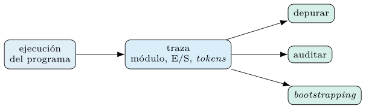
Depurar con la traza: un caso.
Un fallo concreto enseña el método. El programa Triaje de la sección 2.6 devuelve un resumen que habla de «actividad benigna» para una alerta claramente crítica. Sin traza, la tentación es culpar al resumen y retocar su instrucción; con traza, el diagnóstico tarda un minuto: el primer paso muestra que clasificar ya emitió benigno, y el resumen, obediente, resumió conforme a la etiqueta que recibió. El fallo vive en el clasificador —quizá en sus demostraciones, quizá en un caso frontera de la taxonomía—, y todo retoque aguas abajo habría sido maquillaje. La moraleja generaliza: en un programa compuesto, el módulo que muestra el error rara vez es el que lo comete, y la traza convierte la búsqueda del culpable en una lectura secuencial en vez de una conjetura. Por eso la traza no es un lujo de depuración sino el sustrato del método completo: la misma estructura que aquí localiza el fallo es la que el bootstrapping recorre para repartir mérito (capítulo 5).
La integración con herramientas de seguimiento de experimentos —registro de ejecuciones, comparación de versiones— convierte la observabilidad en una práctica sistemática, no en una inspección manual. Un programa de LM en producción se instrumenta como cualquier otro servicio: con registros, métricas y trazas.
El registro de experimentos.
Esa práctica sistemática tiene forma concreta: cada corrida que produzca una cifra —una evaluación, una optimización— se registra con cuanto haría falta para repetirla. El mínimo del libro: el modelo y su versión exacta, los parámetros de muestreo, el estado compilado del programa —o su ruta versionada—, la partición de datos con su semilla, la métrica y su valor, el conteo de tokens y el coste, y la fecha. DSPy se integra con herramientas de seguimiento tipo MLflow, que capturan las trazas y los parámetros de cada ejecución sin instrumentación manual (DSPy 2024); con o sin herramienta, la disciplina es la misma que esta obra aplica a sus propias cifras (capítulo 4): el número sin su ficha de reproducción es una anécdota. El hábito rinde el día menos pensado —¿por qué la versión de marzo puntuaba dos puntos más?— y cuesta minutos si se adquiere el primer día, y semanas si se improvisa el último.
El modelo de programación.
Conviene recapitular la arquitectura del marco, porque sobre ella se monta todo lo demás. Un programa hereda de dspy.Module y declara, como atributos, los módulos que compone; DSPy descubre así sus predictores internos —los puntos que un optimizador puede ajustar— y permite guardarlos y cargarlos como un estado. La configuración global vive en dspy.settings —el LM por defecto, la caché, el número de hilos—, y un bloque dspy.context la modifica de forma local, para una región del código, sin afectar al resto.
with dspy.context(lm=dspy.LM("openai/gpt-4o")):
fuerte = programa(mensaje="...") # usa el modelo grande solo aqui
# fuera del bloque se restaura el LM por defecto
for nombre, pred in programa.named_predictors():
print(nombre, pred.signature) # los puntos optimizables del programaEste modelo —módulos componibles, configuración global, contexto local, estado serializable— es el rasgo que hace de DSPy un marco de programación y no una colección de funciones. La firma declara el qué, el módulo lo realiza, el optimizador lo ajusta y settings gobierna el entorno: cuatro piezas que bastan para construir sistemas de cualquier tamaño. La figura 2.14 las alinea.
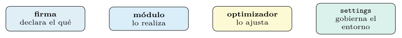
Errores, límites de tasa y reproducibilidad
Trabajar contra una API añade modos de fallo que un programa serio contempla. Los límites de tasa devuelven errores transitorios que conviene reintentar con espera creciente; los tiempos de espera y los cortes de red exigen idempotencia, para no pagar dos veces por una llamada perdida. Las validaciones se hacen con raise y nunca con assert, que desaparece bajo optimización del intérprete. DSPy absorbe parte de esta fricción —reintentos del adaptador, caché ante repeticiones—, pero el diseño del programa decide el resto. La figura 2.15 dibuja el lazo de reintento.
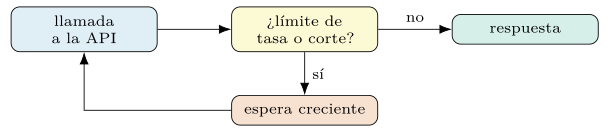
Errores con significado.
No todo error transitorio se trata igual, y leerlos con criterio ahorra noches. El límite de tasa pide espera creciente y menos concurrencia, no más reintentos furiosos —cada reintento inmediato alarga el castigo—. El tiempo de espera agotado en una generación larga suele pedir streaming o un tope de salida menor, no un plazo mayor. El rechazo por filtro de contenido merece mención propia porque no es transitorio: el proveedor moderó la petición o la respuesta, reintentarlo tal cual es inútil, y en dominios de seguridad —donde el texto legítimo habla de exploits y de malware— es un modo de fallo estructural que se gestiona con proveedor, contrato o modelo local, no con bucles. Y el error de contexto excedido es un error de presupuesto (sección 2.1): la solución es podar, no partir la petición a ciegas. La política de reintentos del programa declara qué clase de error reintenta, cuántas veces y con qué espera; el resto se eleva con su causa intacta, porque un error bien tipado es información y uno tragado en silencio es deuda.
Idempotencia y el doble cobro.
El reintento tiene letra pequeña: solo es inocuo si repetir la operación no duplica sus efectos. Una llamada de solo lectura —clasificar, extraer, resumir— se reintenta sin remordimiento: el peor caso es pagar dos veces una respuesta, y la caché suele evitar hasta eso. Una llamada con efectos —el agente del capítulo 7 que abre un tique, envía un aviso o escribe en una base— no se reintenta a ciegas: el corte de red que se llevó la respuesta no se llevó necesariamente el efecto, y el reintento ingenuo abre dos tiques. El remedio es de manual y conviene aplicarlo desde el primer día: claves de idempotencia en las operaciones con efecto —el segundo intento con la misma clave no repite el efecto—, o el diseño que separa proponer de ejecutar, con la ejecución fuera del bucle de reintentos. En la frontera del modelo casi todo es lectura; en la frontera de las herramientas, casi nada, y confundir ambos regímenes es la clase de error que solo se descubre contando tiques duplicados un lunes.
La reproducibilidad merece una nota final. Un modelo por API es un blanco móvil: su versión cambia sin aviso, y con ella las salidas. Por eso toda cifra que se publique se acompaña del modelo y su versión exacta, de la semilla de barajado de los datos y de la fecha; y, por la estocasticidad de la sección 2.2, se da como media con desviación sobre varias corridas, nunca como un único decimal. El capítulo 4 convierte estas cautelas en un método de evaluación con todas sus garantías. La tabla 2.10 lista qué anotar junto a cada cifra.
| Dato | Por qué |
|---|---|
| Modelo y versión exacta | un modelo por API es un blanco móvil |
| Semilla de barajado | fija la partición de los datos |
| Fecha de la corrida | el proveedor cambia sin aviso |
| Media \(\pm\) desviación | la salida es estocástica |
Lecturas recomendadas
DSPy (2024): la API de
LM,Signature,Predicty los adaptadores, con ejemplos actualizados.BerriAI (2024): la interfaz unificada de proveedores en que se apoya
dspy.LM.Holtzman et al. (2020): el muestreo por núcleo y el problema de la degeneración del texto.
Ouyang et al. (2022): por qué los modelos siguen instrucciones en los papeles del formato de chat.